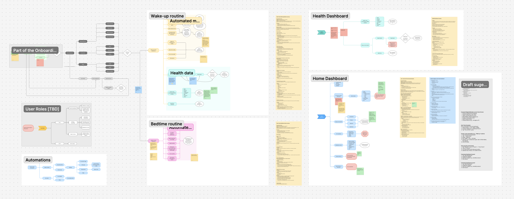
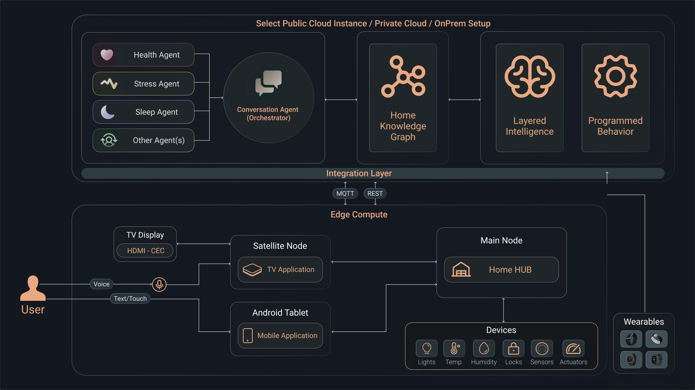
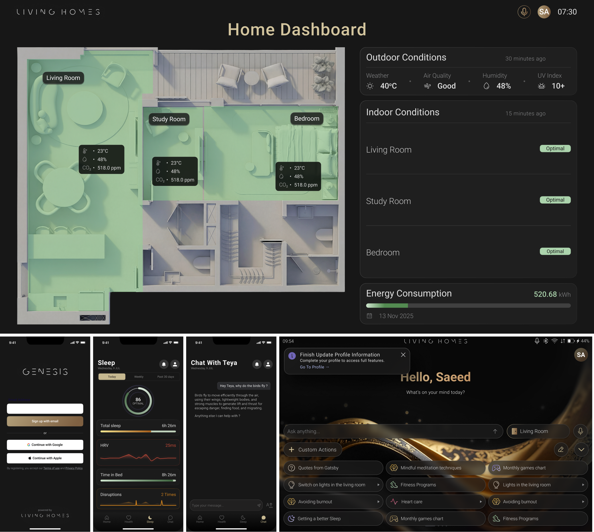
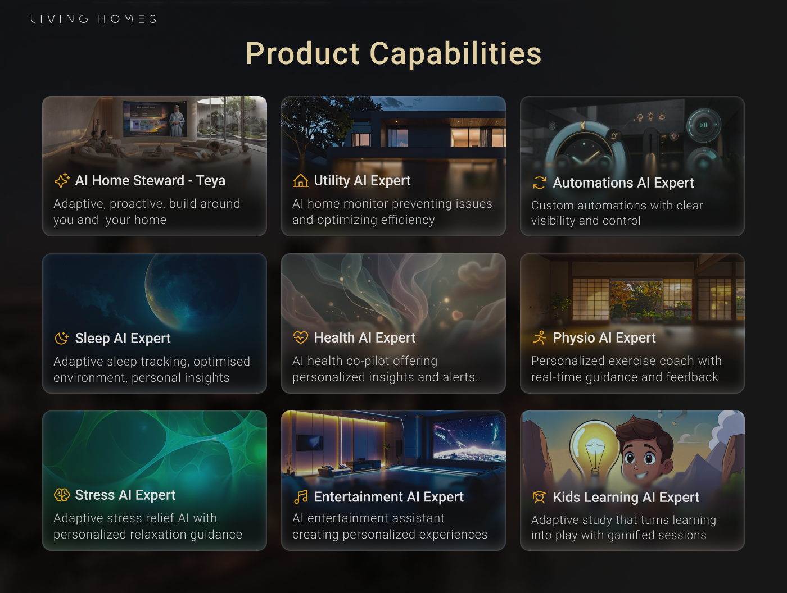

H.Stratev
This project is password protected.
Incorrect password. Try again.
As founding designer and Product Design Lead, I built the entire design foundation of Genesis from scratch - the UI system, interaction model, 3D avatar experience, motion language, and multi-surface design system across TV, tablet, and mobile.
Genesis is a Generation 3 AI-native home platform centered around Teya, a human-like AI steward supported by a team of specialized Expert agents. Together they make the home proactively care for its residents - covering sleep, health, stress, physio, environment, entertainment, and kids learning.
Designing for a home is fundamentally different from designing for a car or a device. The home is where people sleep, recover, raise children, and feel most vulnerable. Every interface decision had to feel caring, not clinical - intelligent, not intrusive.
The core challenge was making an extremely complex system feel effortless. Seven specialized AI agents, live health and environmental data, a conversational avatar, and real-time home automation all had to come together into a single coherent experience a resident would trust from day one.
Building this as the founding designer meant there was no existing design language, no component library, no precedent - anywhere. No comparable product had been built before. Everything had to be created from zero, across three surfaces simultaneously, for a product category that did not yet exist.

Early architecture mapping - onboarding, health data, automations, routines
Genesis runs simultaneously on TV, tablet, and mobile - each with a distinct role, interaction model, and layout logic, all in sync. Designing these as one coherent system rather than three separate apps was the central design challenge of the platform.
The TV is the ambient, avatar-led experience - the surface where Teya lives and where the home expresses itself. The tablet is the control layer, built for deliberate interaction: automations, room controls, deep settings. Mobile is the lightweight on-the-go view - health metrics, sleep summary, quick utility access.
Underneath, the platform runs on a Gen-3 AI architecture: an LLM reasoning layer, a multi-agent system, and a Knowledge Graph that builds a continuously updated digital model of the home and the people in it. Designing for this meant the UI had to handle proactive, unprompted interactions - the system acts before the user asks. That required a completely different interaction model from anything that came before it.
To build and ship the product, I worked across the full production toolchain - Unreal Engine for the TV avatar environment, Blender for 3D asset creation, Rive for all real-time UI animations, and Figma for the full design system and multi-surface specs.

Understanding the system architecture was essential before designing - mapping how voice, touch, and real-time data flow through TV, tablet, and physical devices informed every interaction decision.

The most consequential design decision in Genesis was replacing traditional app navigation with a conversational AI character. Instead of menus, dashboards, and controls, residents talk to Teya - and she listens, reasons with the context of the home and the people in it, and acts.
Designing Teya meant solving two problems at once: making her feel human enough to be trusted, and calm enough to live with. A hyperrealistic 3D avatar in your home could easily feel uncanny or surveillance-like. Every visual decision - her expressions, her posture, her speech timing, how she enters and exits a scene - was made to feel like a natural presence, not a product feature.
Teya also had to express seven distinct expert modes without feeling like seven different characters. The Sleep Teya, the Kids Learning Teya, the Stress Relief Teya - each has a different tone and pace, but the same underlying character. Building that consistency across modes was one of the more complex design system challenges of the project.
Genesis covers seven life domains - sleep, health, stress, physio, environment, entertainment, and kids. Each is handled by a dedicated AI Expert agent with its own interaction model, screen logic, and ambient behavior.
Every feature was designed around a specific moment in a resident's day - waking up to a sleep report, a room transforming in response to detected stress, a child guided through a learning session by Teya. The goal was never to impress with technology, but to make each moment feel like the home genuinely understood what the person needed.

Motion is not decorative in Genesis - it carries meaning. The home has no buttons to press; animation is how the system communicates state, response, and intent back to the resident. Getting this right was one of the most time-intensive parts of the design work.
All real-time animations were built in Rive, responding live to data and system states. The avatar's speech and reaction animations were designed to feel like a person listening and responding - not a looping idle state with a voice track over it. Emergency sequences like the Civil Defense alert had to communicate urgency clearly and immediately, without creating panic.
Genesis was showcased at GITEX Global in Dubai, AI Everything in Dubai and Riyadh, and CES in Las Vegas. Across all three events, it was among the very few products presenting a fully built, end-to-end AI home experience rather than a concept or prototype.
Genesis established itself as the only Gen-3 AI home platform in the European premium residential market, standing clearly apart from legacy Gen-1 and Gen-2 players. The product design and user experience became a major selling point for investors, directly contributing to $10M in seed funding and $5M in additional partnership contracts.
The platform was deployed to 5,000 homes in Q1 2026, with projections reaching 50,000 by end of 2026. The design enabled a recurring services revenue model built around health, wellbeing, and lifestyle subscriptions - the highest-value layer in the smart home stack.
The strongest external validation: Living Homes was acquired by Etisalat, the largest telecom operator in the Middle East - a direct recognition of the product vision and the experience built around it.